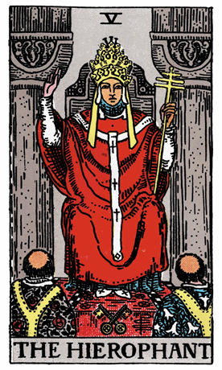

The journey through the Major Arcana of the Rider-Waite Tarot Deck unfolds, and we encounter The Hierophant, a symbol of spiritual wisdom, tradition, and the bridge between the earthly and divine realms. Seated between two pillars, he serves as the mediator between the sacred and the mundane.
The Hierophant, also known as the High Priest, wears a triple crown, symbolizing his authority over the three realms of heaven, earth, and the underworld. His three-tiered cross represents the connection between the divine and human realms. The crossed keys at his feet symbolize the esoteric knowledge he guards and imparts to those seeking enlightenment.
Two acolytes kneel before The Hierophant, emphasizing his role as a teacher and spiritual guide. The crossed hands of the acolytes symbolize the union of opposites—a theme echoed throughout the card. The Hierophant's raised hand signifies a blessing, while the other holds a triple scepter representing his spiritual authority.
In a tarot reading, The Hierophant often emerges as a call to connect with spiritual traditions, seek guidance from mentors, or explore structured belief systems. It suggests a time for seeking higher knowledge, embracing tradition, and finding meaning in the wisdom passed down through generations.
The pillars on either side of The Hierophant represent duality—the balance between opposing forces. This balance is further emphasized by the crossed keys and the crossed hands of the acolytes. The Hierophant encourages individuals to navigate the realms of both tradition and personal spirituality, finding harmony between the two.
The Hierophant's presence also speaks to the importance of community and shared wisdom. It suggests a time for connecting with like-minded individuals, participating in group activities, and drawing upon collective knowledge for personal growth. The Hierophant teaches that spiritual insights can be enhanced through communal experiences.
From a psychological perspective, The Hierophant represents the search for meaning, guidance, and a sense of belonging. It encourages individuals to explore their spiritual side, connect with established traditions, and find solace in shared beliefs. The Hierophant serves as a reminder that seeking wisdom from both within and without can lead to a deeper understanding of oneself and the universe.
In a reversed position, The Hierophant may suggest a rebellion against traditional beliefs or a reluctance to conform to established norms. It could indicate a need for personal exploration and a desire to find one's unique spiritual path. In such cases, The Hierophant serves as a guide, urging individuals to balance the quest for personal authenticity with respect for the wisdom embedded in tradition.
Archetypally, The Hierophant aligns with the archetype of the Teacher or Guru—a figure who imparts spiritual knowledge, guidance, and moral principles. The Hierophant embodies the wisdom of the ages, emphasizing the importance of passing down knowledge for the greater good.
Societally, The Hierophant encourages communities to honor and preserve their cultural and spiritual traditions. It promotes a sense of shared values, respect for diversity, and the recognition of the wisdom that binds individuals together. The Hierophant emphasizes the role of mentors, spiritual leaders, and community elders in guiding the collective toward higher understanding.
In conclusion, The Hierophant in the Rider-Waite Tarot Deck beckons us to explore the realms of spiritual wisdom, tradition, and the guidance offered by those who have walked the path before us. It invites individuals to find balance between personal spirituality and collective traditions, recognizing that both contribute to the journey of self-discovery and enlightenment.